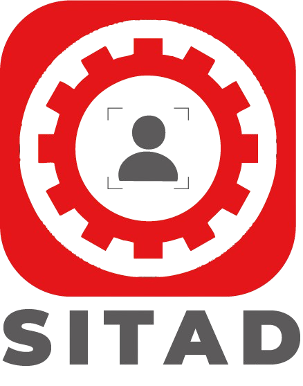

Sindicato de Trabajadores Digitales de REEDCAM (SITAD)Secretaría de Organización · Comité Ejecutivo NacionalPor un futuro digital, al servicio de México
Manual de la Sección · Plataforma de Organización
Cómo revisar y preautorizar las solicitudes de afiliación de tu Sección. Versión 1.0 · septiembre de 2026. Este manual se actualiza cada vez que cambia la plataforma; la versión vigente siempre está en .
1. Tu papel en cuatro líneas
- Eres la puerta de entrada. Los trabajadores de tu Sección se registran con tu liga (o tú los registras) y suben sus documentos.
- Revisas primero. Abres cada solicitud, ves cada documento en pantalla, marcas lo que está bien y señalas lo que hay que corregir.
- Ayudas y das seguimiento por WhatsApp o correo, cuantas veces haga falta, hasta que el expediente esté completo y correcto.
- Preautorizas. Cuando todo está bien, pulsas Preautorizar y enviar al CEN. Solo entonces la solicitud pasa a la Secretaría de Organización del CEN, que dictamina; el Secretario General autoriza el alta.
Lo que la Sección no hace: no dictamina, no da de alta, no expide constancias ni gafetes, y no pide documentos distintos de los del expediente (no se pide recibo de nómina ni comprobante de domicilio).
2. Entrar a la plataforma
- Abre en tu celular o computadora y pulsa Soy de una Sección o del CEN.
- Escribe tu correo y tu contraseña (te los entrega la Secretaría de Organización del CEN). Si no los tienes, escribe a sitadorganizacion@gmail.com.
- Entras a tu Portal de la Sección. Arriba a la derecha está tu liga de afiliación con el botón Copiar: esa es la liga que compartes a los trabajadores por WhatsApp.
3. Las dos formas de registrar a un trabajador
| A · El trabajador se registra solo | B · Tú lo registras |
|---|
| Le compartes tu liga. Llena sus datos, sube sus documentos (archivo o foto con la cámara) y recibe su folio de seguimiento. Después descarga sus dos formatos para firmar. | Recibes su papelería (en persona o por correo). En tu portal pulsas Registrar una solicitud recibida en la Sección, capturas los datos tal como vienen en la cédula firmada y subes los documentos, incluidos los ya firmados. |
En los dos casos la solicitud aparece en tu pestaña Solicitudes con la etapa Revisión seccional.
4. Los documentos del expediente (y cómo deben venir)
| Documento | Qué revisar |
|---|
| 1. Solicitud de afiliación (Anexo 12 y 13) | El sistema la entrega prellenada. Debe venir firmada de puño y letra con tinta azul, igual que la firma de la INE, en dos lugares: al final de la manifestación y al final del aviso de privacidad. Sin firmas insertadas como imagen ni tachaduras. Foto o escaneo de las cuatro hojas. |
| 2. Cédula de afiliación (Anexo 23) | Prellenada por el sistema. Todos los campos con dato (o "No aplica"). Firmada con tinta azul al final. Los datos deben coincidir con la solicitud. |
| 3. INE (frente y reverso) | Vigente. Dos fotos: frente y reverso, completas, sin reflejos ni sombras. El nombre debe coincidir exactamente con el de la solicitud. |
| 4. Constancia de la CURP | Constancia oficial (gob.mx). Nombre y fecha de nacimiento iguales a la INE. |
| 5. Constancia de Situación Fiscal (SAT) | Reciente, legible, con el RFC completo; el RFC y el nombre deben coincidir con la cédula. |
| Solo transporte de pasajeros o última milla: tarjeta de circulación, póliza de seguro, licencia de manejo | Completas, vigentes y legibles. El sistema las pide solo si la persona marcó "transporte". |
Regla de foto: completa y legible, sin recortes, sin reflejos de luz, sin sombras que tapen datos, sin dedos encima. Si no se lee, se pide de nuevo.
5. Cómo revisar una solicitud, paso a paso
- En Solicitudes, pulsa la fila de la persona (las de etapa Revisión seccional aparecen primero).
- Se abre la ficha. En Expediente ves cada documento en pantalla, uno debajo del otro. Míralos con calma; puedes Abrir en pestaña para verlo más grande.
- Si el documento está bien, pulsa Marcar correcto (se pone verde).
- Si algo está mal, escribe en el cuadro Observación para la persona qué está mal y cómo debe venir (por ejemplo: "La foto del frente de la INE está borrosa; vuelve a tomarla con buena luz") y pulsa Guardar observación. La persona la ve en su consulta.
- Si falta un documento o alguien te lo entregó en mano, súbelo tú con Subir o Reemplazar (archivo o foto).
- Cuando termines de revisar, si hay algo que corregir: en la tarjeta Seguimiento a la persona pulsa Pedir corrección / dar seguimiento. El sistema arma la lista con lo que falta y tus observaciones; revísala y acepta. Luego pulsa WhatsApp (se abre WhatsApp con el número de la persona y el mensaje ya escrito, con la liga para corregir) o Correo. Puedes repetir esto cuantas veces haga falta.
- Cuando la persona corrija, verás la etiqueta novedad en su fila. Vuelve a revisar.
- Cuando los cinco (u ocho) documentos estén marcados correctos y no haya observaciones pendientes, pulsa Preautorizar y enviar al CEN. Confirma y, si quieres, deja una nota para el CEN. La etapa cambia a Lista para el CEN.
Después de preautorizar, el CEN dictamina y el Secretario General autoriza. Si el CEN encuentra algo, te la regresa con un motivo (lo ves en el seguimiento) y vuelves al paso 2.
6. Lista de verificación antes de preautorizar
| ✓ | Punto |
|---|
| ☐ | Solicitud (Anexo 12 y 13) con sus dos firmas de puño y letra, tinta azul, igual que la INE. |
| ☐ | Cédula (Anexo 23) completa y firmada con tinta azul. |
| ☐ | INE vigente, frente y reverso legibles; nombre idéntico al de la solicitud. |
| ☐ | CURP: nombre y fecha de nacimiento coinciden con la INE. |
| ☐ | Constancia de Situación Fiscal reciente; RFC y nombre coinciden con la cédula. |
| ☐ | Si es transporte: tarjeta de circulación, póliza y licencia vigentes. |
| ☐ | La persona es trabajador(a) en activo de la Empresa y no declaró funciones de confianza (si lo declaró, anótalo en la nota para el CEN). |
| ☐ | Todos los documentos marcados "Correcto" y sin observaciones pendientes. |
7. Qué ve la persona y cómo la ayudas
- Con su folio y su nombre entra a Consultar mi trámite: ve la etapa ("Revisión en tu Sección"), tus observaciones y seguimientos, descarga sus formatos para firmar y sube documentos con archivo o cámara.
- Si no puede con la tecnología, que vaya contigo: tú subes por ella desde la ficha.
- Cuando el Secretario General autoriza, el CEN le envía su Constancia de Registro, su gafete o credencial y la carta de Finanzas para la cuota. En tu pestaña Padrón adscrito ves a las personas ya afiliadas de tu Sección.
8. Dudas
Secretaría de Organización del CEN: sitadorganizacion@gmail.com. Escribe siempre con el folio de la persona.
Manual de la Sección · Plataforma de Organización SITAD · v1.0 (septiembre 2026) · Secretaría de Organización del Comité Ejecutivo Nacional. Este documento orienta. En caso de duda o diferencia prevalecen la Ley Federal del Trabajo, el Estatuto y las resoluciones válidamente emitidas por los órganos competentes. C. Antonio Ancona No. 1, Interior 3, Col. Cuajimalpa, C.P. 05000, Alcaldía Cuajimalpa de Morelos, Ciudad de México.